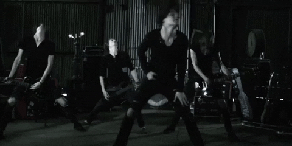

How It Came to Be
Deathcore is a subgenre that blends Metalcore with the growling vocals of Death Metal. While Death Metal typically speeds up its instrumentals during the intense parts of a song, Deathcore takes a different approach by slowing down the song, particularly during the breakdowns. These breakdowns are slower, heavier sections designed to allow the listener to really "feel" the intensity and weight of the music. This unique approach to tempo and heaviness sets Deathcore apart from other genres and creates a distinct experience for fans of the genre.
Clothes Worn & Culture
In Deathcore, the influence of the Emo subculture became prominent as fans and band members alike began to adopt Emo-style attire, including swoopy bangs, black clothing, and accessories like bracelets and piercings. This connection to Emo was similar to what happened with Metalcore, and it contributed to the genre's unique aesthetic. Along with this, a specific headbanging style called "crab headbanging" became popular. In this style, fans squat low to the ground, mimicking a crab walk, while headbanging side-to-side or in circles during the breakdowns. Despite this distinct visual culture, Deathcore did not achieve mainstream success due to its extreme heaviness, and many traditional metal fans still viewed it unfavorably because of the genre's association with Emo fans and its roots in Metalcore.
Fun Facts
Bring Me The Horizon is a notable example of a band that started in the Deathcore genre but gradually evolved over time, moving away from the heaviness of their early work. Their earlier albums, such as Count Your Blessings and Suicide Season, were deeply rooted in Deathcore and Metalcore, featuring aggressive breakdowns, guttural vocals, and intense instrumentals. As the band progressed, particularly with albums like Sempiternal and That's the Spirit, their sound became more melodic, incorporating electronic elements and cleaner vocals, which helped them appeal to a broader audience. This shift toward a more mainstream, alternative pop sound reached its peak with collaborations with artists like Halsey and Ed Sheeran. Despite their origins in extreme metal, Bring Me The Horizon has successfully transitioned into a more accessible, genre-blending band, reaching a new generation of fans outside of the metal scene.
Songs
Click on an image to see the history of one of the metal genres